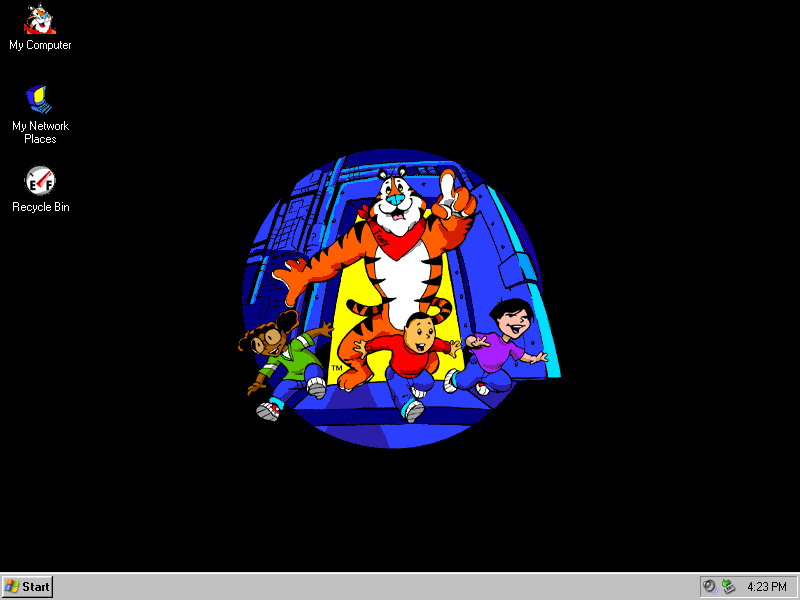

Frosted Flakes Extras

Frosted Flakes Cursor

DOWNLOAD
 .cur (Windows Cursor) file (326 B)
.cur (Windows Cursor) file (326 B)
Frosted Flakes Desktop Icons
DOWNLOAD
4 .ico (Windows Icon) files zipped (9.25 KB)
Frosted Flakes Theme

DOWNLOAD
.zip file (195 KB)
Frosted Flakes Sound
great!.wav
275 KB
|